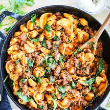

Italian Sausage and Tortellini
Home

A perfect weeknight meal when you dont have the energy to cook something extravagent but also want to save some money by noot doordashing.
Ingredients:
- 1/2lb italian sausage
- 2 tablespoons butter
- 2 tablespoons minced garlic
- 1 teaspoon freshly ground black pepper
- 1 tablespoon onion powder
- 1 tablespoon freshly ground black pepper
- 1/2 tablespoon italian seasoning
- 1/2 teaspoon red pepper flakes
- 2 cups beef broth
- 1/4 cup heavy cream
- 8 ounces cheese tortellini
- 2 ounces garlic, chive, and onion cream cheese
- 1/4 cup grated parmesan cheese
- fresh basil for garnish
Cooking Instructions:
- Set large skilled over medium heat. Break up sausage into bite sized chunks. Add to pan and cook until brown on all sides. Remove sausage and set on a plate to the side.
- Let skilled cooldown for 3 minutes before placing back onto medium heat. Heat butter then garlic and saute for 1 minute. Then add black pepper, onion powder, italian seasoning, and red pepper flakes. Stir accordingly.
- Pour in beef broth and add heavy cream. Stir to combine.
- Add tortellini and cream cheese while stirring. Bring to simmer, cover, and reduce heat until tortellini is tender. Should take about 5-8 minutes.
- Remove from heat and stir in parmesan cheese. Serve with fresh basil on top.